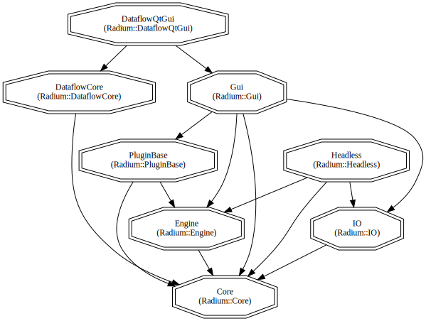

Dependencies management systems
We developed a series of tools to fetch and compile these dependencies easily, except for Qt, which needs to be installed and passed to cmake through the variables CMAKE_PREFIX_PATH or Qt6_DIR (see documentation at https://doc.qt.io/qt-6.5/cmake-manual.html#getting-started).
We offer two different systems to handle external dependencies (see details and how-to in the following sections):
- [recommended] external build: the user compiles and installs once for all the dependencies using a dedicated cmake project. Then, Radium cmake project is configured to link with installed dependencies, as described in compilation instructions.
- manual management: users can also provide their own version of the dependencies through cmake packages.
- Warning
- Dependencies need to be built with the same build type (ie. Release, Debug) than Radium.
Configuration of Radium
To compile Radium-Engine, you have to indicate where cmake can find each dependency.
For convenience, dependencies install procedure create a configuration file, to be used with the -C option of cmake. The cmake config file /path/to/installs/radium-external-r/radium-options.cmake contains, depending on your dependency configuration:
set(Eigen3_DIR "/path/to/external/install/share/eigen3/cmake/" CACHE PATH "My Eigen3 location")
set(OpenMesh_DIR "/path/to/external/install/share/OpenMesh/cmake/" CACHE PATH "My OpenMesh location")
set(cpplocate_DIR "/path/to/external/install/share/cpplocate/" CACHE PATH "My cpplocate location")
set(nlohmann_json_DIR "/path/to/external/install/lib/cmake/nlohmann_json/" CACHE PATH "My nlohmann_json location")
set(glm_DIR "/path/to/external/install/glm/lib/cmake/glm/" CACHE PATH "My glm location")
set(glbinding_DIR "/path/to/external/install/glbinding/" CACHE PATH "My glbinding location")
set(globjects_DIR "/path/to/external/install/globjects/" CACHE PATH "My globjects location")
set(stb_DIR "/path/to/external/install/include/stb/" CACHE PATH "My stb location")
set(stb_INCLUDE_DIR "/path/to/external/install/include/" CACHE PATH "My stb_INCLUDE location")
set(tinyEXR_DIR "/path/to/external/install/share/tinyEXR/cmake/" CACHE PATH "My tinyEXR location")
set(assimp_DIR "/path/to/external/install/lib/cmake/assimp-5.0/" CACHE PATH "My assimp location")
set(tinyply_DIR "/path/to/external/install/lib/cmake/tinyply/" CACHE PATH "My tinyply location")
set(PowerSlider_DIR "/path/to/external/install/lib/cmake/PowerSlider/" CACHE PATH "My PowerSlider location")
set(QtNodes_DIR "/path/to/external/install/lib/cmake/QtNodes/" CACHE PATH "My QtNodes location")
set(RADIUM_IO_ASSIMP ON CACHE BOOL "Radium uses assimp io")
set(RADIUM_IO_TINYPLY ON CACHE BOOL "Radium uses tinyply io")
When configuring Radium cmake project, don't forget to add this file by calling cmake -C /path/to/installs/radium-external-r/radium-options.cmake ...
You can also provide these variables as cmake command line argument:
cmake \
-DEigen3_DIR /path/to/external/install/share/eigen3/cmake/
... and so on ...
User provided external dependencies
You can use your own installation of a local dependency instead of letting cmake fetch and compile it. To this end, just provide the corresponding '*_DIR' to cmake at configuration time as show before (with '-D' option, configuration file or toolchain file, please refer to cmake documentation).
Currently supported (note that these paths must refer to the installation directory of the corresponding library):
Eigen3_DIROpenMesh_DIRcpplocate_DIRnlohmann_json_DIRglm_DIRglbinding_DIRglobjects_DIRstb_DIRtinyEXR_DIRassimp_DIRtinyply_DIRPowerSlider_DIRQtNodes_DIR
- Warning
- You have to take care of the consistency of the external dependencies, e.g. it's not possible to use your version of globjects without providing your version of eigen, otherwise you will have mixed version in Radium.
Radium Build Details
Radium follows a standard cmake structure, so any IDE supporting cmake should be able to configure and build it. Out-of source builds are mandatory.
Several targets allowing to build or install only a specific part of Radium-Engine are defined by the cmake configuration. The standard targets all and install are also available as a shortcut to build all the configured components and to install the main components.
- Note
- We strongly recommend to have dedicated build and install directories for each build type (Release, Debug). To compile Radium in Debug mode, the dependencies must be compiled and installed in Debug mode (due to a limitation in assimp).
Folder structure
Radium-Engine relies on CMake build-chain on all supported platforms. In most cases, building should be pretty straightforward, provided that cmake can locate the dependencies.
Installation directory
By default, ${CMAKE_INSTALL_PREFIX} is set as follow:
set(RADIUM_BUNDLE_DIRECTORY ${CMAKE_CURRENT_SOURCE_DIR}/Bundle-${CMAKE_CXX_COMPILER_ID})
- For Debug or RelWithDebInfo build
set(RADIUM_BUNDLE_DIRECTORY ${CMAKE_CURRENT_SOURCE_DIR}/Bundle-${CMAKE_CXX_COMPILER_ID}-${CMAKE_BUILD_TYPE})
It has the following structure
Bundle-*
- bin/ include/ lib/ LICENSE README.md Resources/
Configure build options
Radium offers the following build options:
// Enable coverage, gcc only. Experimental, need ENABLE_TESTING
RADIUM_ENABLE_COVERAGE:BOOL=OFF
// Enable examples app build. To install examples, build explicitly the target Install_RadiumExamples.
RADIUM_ENABLE_EXAMPLES:BOOL=ON
// Enable precompiled headers.
RADIUM_ENABLE_PCH:BOOL=OFF
// Enable testing. Tests are automatically built with target all, run with target check or test.
RADIUM_ENABLE_TESTING:BOOL=OFF
// Include Radium::Core in CMake project.
RADIUM_GENERATE_LIB_CORE:BOOL=ON
// Include Radium::Dataflow* in CMake project.
RADIUM_GENERATE_LIB_DATAFLOW:BOOL=ON
// Include Radium::Engine in CMake project.
RADIUM_GENERATE_LIB_ENGINE:BOOL=ON
// Include Radium::Gui in CMake project.
RADIUM_GENERATE_LIB_GUI:BOOL=ON
// Include Radium::Headless in CMake project.
RADIUM_GENERATE_LIB_HEADLESS:BOOL=ON
// Include Radium::IO in CMake project.
RADIUM_GENERATE_LIB_IO:BOOL=ON
// Include Radium::PluginBase in CMake project.
RADIUM_GENERATE_LIB_PLUGINBASE:BOOL=ON
// Install documentation. If RadiumDoc is compiled, install documentation to bundle directory for install target.
RADIUM_INSTALL_DOC:BOOL=ON
// Provide loaders based on Assimp library
RADIUM_IO_ASSIMP:BOOL=ON
// Provide deprecated loaders (to be removed without notice)
RADIUM_IO_DEPRECATED:BOOL=ON
// Provide loaders based on TinyPly library
RADIUM_IO_TINYPLY:BOOL=ON
// Provide loader for volume pvm file format
RADIUM_IO_VOLUMES:BOOL=ON
// Disable Radium Log messages
RADIUM_QUIET:BOOL=OFF
// Update version file each time the project is compiled (update compilation time in version.cpp).
RADIUM_UPDATE_VERSION:BOOL=OFF
// Use double precision for Scalar.
RADIUM_USE_DOUBLE:BOOL=OFF
// Enable loading/saving files with RadiumGltf extension
USE_RADIUMGLTF:BOOL=OFF
// Use assimp data loader from Radium IO
USE_RADIUM_IO_ASSIMPLOADER:BOOL=ON
All radium related cmake options (with their current values) can be printed with cmake -LAH | grep -B1 RADIUM (on linux like system)
- Warning
- For computers with low RAM capacities (under 12G) we recommend to set the
CMAKE_BUILD_PARALLEL_LEVEL environment variable to a reasonable value (i.e. 2) to prevent the computer from swapping.
Precompiled headers
Radium build can take benefit of precompiled headers. To do so, set RADIUM_ENABLE_PCH=ON (OFF by default) at cmake configure time. Compilation speedup depends on what files you are currently editing, and full compilation is roughly 20% less with precompiled header enabled.
Dependencies between libraries
The options RADIUM_GENERATE_LIB_XXXX allows to enable/disable each Radium library. The dependencies between libraries are set as follow:

- Warning
- Consistency of
RADIUM_GENERATE_LIB_*** options is not checked wrt. the dependencies.
- When enabled using
RADIUM_GENERATE_LIB_***, each library has a compilation target: Core, Engine, ...